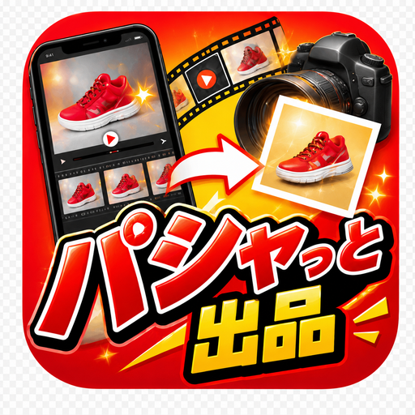
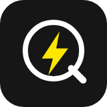

— もう、飽きた。—
「AIで月◯万稼ぐ方法」に、
もう振り回されない。
LINEグループに誘われ、ウェビナー、面談、そして高額スクール。
「20万、30万は安い」「返金保証付き」「このスキルで年商1億」…
——で、どうなりました？
▽ よく考えて
LINEグループに誘われ、ウェビナー、面談、そして高額スクール。
「20万、30万は安い」「返金保証付き」「このスキルで年商1億」…
——で、どうなりました？
もう、飽きた。
「AIで月これくらい稼ぐ方法があるんです」——そんなメッセージで、LINEグループに誘われて。
ウェビナーに参加させられて、そこから個別面談へ。そして最後は、決まってスクールや講座への誘導。
「20万、30万は、投資だと思えば安い」。
「返金保証も付いています」。
「このスキルで、年商1億円の人もいます」。
耳ざわりのいい言葉を、たくさん浴びて。カード番号を入力して。——それで、どうなりましたか。
そして数ヶ月後——
・・・・ん？
結果は、伴いましたか。
正直に、胸に手を当てて。
受け取ったのは、分厚い動画教材と、大量のプロンプト集。
最初の数日は、やる気に満ちていた。でも——
仕事や家事に追われ、教材は少しずつ「あとで見る」に。
プロンプトをコピーして貼ってみても、自分の状況にどう当てはめるか分からない。
コミュニティで質問しても、返ってくるのは「まずは行動あるのみ！」の精神論。
気づけば、月額のコミュニティ費だけが、静かに引き落とされていく。
——これ、あなたのことでは、ありませんか。
AIに、閃きも、嘆きも、感情もありません。
親切な心も、あなたを想う希望も、ありません。
だから、講座やスクールでAIを「知った」「学んだ」ところで、それは——
包丁の使い方や、調味料の種類と分量が分かっただけ。
稼げる料理人になったわけではないのです。
AIは、使えなければただの箱。
でも、どう使うかで、時間と価値は飛躍的に高められる。
それは、真実です。
結局のところ——
稼ぐ方法も、楽しむ方法も、AIは教えてくれない。
「何に使うか」を自分で決めないと、何も始まらない。
からくりは、シンプルです。
彼らが売っているのは、「可能性」という名の夢。
「AIを使えば月30万」「自動化で不労所得」——その言葉に嘘はないかもしれません。実際、うまくやれば可能です。
でも、そこにはいちばん大事な一行が、いつも抜けている。
「※ただし、あなたが"何をするか"を、自分で決められれば。」
この一行が抜けているから、あなたは高額を払い、知識を受け取り、そして——「で、どうしたいの？」の前で、立ち尽くす。
知識は増えた。でも、行動は一歩も進んでいない。お金と時間だけが、静かに消えていく。
考えてみてください。もし本当に「誰でも月30万稼げる完璧なプロンプト」があるなら——
なぜ、それを20万円で他人に売るのでしょう？
自分で使えば、毎月30万入るはずなのに。
答えは簡単です。「教えること」自体が、彼らのビジネスだから。あなたが稼ぐかどうかは、彼らにとって本質ではないのです。
私たちは、その構造に、うんざりしています。
だから、「知識」ではなく「動く道具」を、手渡すことにしました。
ここで、ストップする。前に進まない。
講座やスクールが結果的に何も高められないのは、
「AIを何に使うか」が、あなた次第になってしまうから。
一番大事なところが、ずっとボヤけたままなんです。
広告では「プロンプトあげる！」「AIが自動でやるからあなたは自由！」と煽る。
でも——完璧なプロンプトは、くれない。
ボヤけたままスクールへ誘導され、参加して、また聞かれる。
「で、どうしたいの？」
この無限ループに、ハマっていませんか。
このツールは、そのボヤけた部分——
「何に使うか」が、明確。
小学生でも、わかる。
では、何が価値なのか——
あなたなら、もう分かりますよね？
迷う時間こそ、いちばんの損失です
AIに関わって、こんな経験をした人を、私たちはたくさん見てきました。
□ 「ChatGPTすごい」と聞いて登録したけど、結局何を聞けばいいか分からず放置している。
□ プロンプト集を買ったり保存したりしたけど、自分の仕事に当てはめられず、そのまま。
□ 「AIで自動化」の動画を何本も見たのに、自分では一つも自動化できていない。
□ 情報商材やスクールにお金を払ったのに、手元に残ったのは"やった気"だけ。
□ 気づけば、AI関連の勉強に時間だけがどんどん溶けていく。稼ぎには、つながらない。
断言します。これは、あなたのせいではありません。
悪いのは、「AIという万能の箱」を渡されて、「あとは自分で考えてね」と放り出される構造そのもの。
料理をしたことがない人に、プロ用の調理器具一式と食材を渡して「さあ、稼げる料理人になって」と言っているようなものです。
できるわけがない。それは、あなたの能力の問題ではないのです。
万能な道具は、使いこなせる人にしか価値がありません。
「何でもできる」は、多くの人にとって「何をすればいいか分からない」と同じ。
できることは無限。でも「あなたが何をするか」は教えてくれない。設定・プロンプト・使い道、全部あなた任せ。最初の一歩でつまずく。
目的をひとつに絞り、AIを搭載。開いた瞬間に「何をするか」が決まっている。難しい設定ゼロ。迷わない。だから、成果まで最短。
アプリケーションとは、そもそも「専用機」です。
カメラアプリは写真を、地図アプリは道案内を——目的がひとつだから、誰でも迷わず使える。
そこにAIを搭載したら、どうなるか。
面倒がまるごと消え、成果だけが手元に残る。それが、私たちの答えです。
| 比べてみると | 高額スクール／講座 | SWAN WORKSの専用機 |
|---|---|---|
| 最初に払う額 | 20〜30万円 | 0円（月額のみ） |
| 手に入るもの | 知識・プロンプト | 動く道具そのもの |
| 「何をするか」 | あなた任せ | 最初から明確 |
| 合わなかったら | 大きな損失 | 退会するだけ |
| 使い始めるまで | 教材を学んでから | 今日から |
多くの人は、こう思い込まされています。
「まずAIを学ばなきゃ」「知識をつけてから使おう」と。
でも考えてみてください。あなたは、スマホのカメラの仕組みを学んでから写真を撮りましたか？ 電子レンジの電磁波の理屈を理解してから温めましたか？
違いますよね。使いながら、覚えた。それでいい。それが道具です。
専用機なら、学ぶ前に、今日から使える。使ううちに、コツが分かる。成果が出る。稼ぎや楽しみに、直接つながる。
——「学んでから」を待っている時間こそ、いちばんもったいない。
出品写真の加工に、1件10分。月100件なら、それだけで約16時間。
集客のための投稿づくりに、毎週何時間。記事を1本書くのに、丸一日。
その時間は、二度と戻りません。
専用機は、その時間をまるごと肩代わりします。空いた時間で、あなたは"あなたにしかできないこと"に集中できる。
これは、単なる時短ではありません。あなたの人生の時間の、使い方そのものを変えるということです。
どれも、AIが苦手でも大丈夫。使うほど、あなた仕様に育ちます。

スマホで商品の動画を撮るだけ。メルカリ・ヤフオク・eBayの出品写真が、背景消し・切り抜き・複数角度まで全部自動で完成。写真加工の時間を、まるごと売上に変える。
「1枚ずつ加工」の地獄から解放され、出品数を増やせる。実物をそのままキレイに見せるから、届いた商品とのギャップも起きにくく、低評価やトラブルも避けられる。撮るだけ、あとはおまかせ。

お店の集客を、まるごとおまかせ。情報を入れるだけで、SNS投稿もPR動画も用意。特にリールやYouTube向けの動画生成が強力で、そのまま広告にまで昇華できる。
「何を投稿すればいいか分からない」「動画編集なんて無理」——その壁を、まとめて越える。集客に時間もお金もかけられない、小さなお店やひとり事業の、頼れる相棒に。
伝えたいことを、読まれる記事に。テーマを選ぶだけで、構成から執筆までAIが伴走。ブログ・note・お店のお知らせ——「書かなきゃ」で止まっていた発信が、前に進む。
真っ白な画面とにらめっこする時間は、もう終わり。文章が苦手でも大丈夫。あなたの伝えたい想いを、読み手に届く形へ。続けられるから、積み上がる。
※このほか、競馬をAIで楽しむ「未来競馬」など、専用機は続々準備中です。
専用機がある毎日は、こう変わります。
■ 副業でフリマをやる、Aさんの場合
これまでは、売りたい物を撮って、パソコンで背景を消して、明るさを直して、角度違いも用意して…で1件30分。だから出品が溜まる一方だった。
いまは、スマホで商品をぐるっと動画に撮るだけ。あとは専用機が出品写真を並べてくれる。空いた時間で、仕入れと梱包に集中。出品数が増えて、売上も伸びた。
■ 小さなお店を営む、Bさんの場合
「SNSが大事なのは分かる。でも投稿を考える時間も、動画を作るスキルもない。」
いまは、お店の情報を入れるだけで、投稿もPR動画も用意できる。リールやYouTube向けの動画は、そのまま広告にも使える。集客に、やっと手が回るようになった。
■ 発信を始めたい、Cさんの場合
「伝えたいことはある。でも、書き出すと手が止まる。」
いまは、テーマを選ぶだけで、構成から文章までAIが伴走。真っ白な画面と向き合う時間がなくなり、発信が続くようになった。
SWAN WORKSのすべての専用機は、必ずこのどれかを実現します。
めんどくさいを、消す
手間と時間のかかる作業を、AIがまるごと肩代わり。例：パシャっと出品／クイマ／ソラモト
たのしみを、増やす
趣味や娯楽を、AIがもっと面白く、もっと深く。例：未来競馬（開発中）
まなびを、深める
理解と上達を、AIが隣で加速。例：株スク（開発中）
不安を、安心・安全へ
見えない不安を、AIがそっと支える。例：VoiceKey／MIMAMORO（開発中）
「AIのすごい力を、"詳しくない人"にこそ届ける。」
それが、SWAN WORKSのミッションです。
高額なスクールや講座に誘われて、清水の舞台から飛び降りる。
そんな決断は、もう要りません。なぜなら——
サブスクで、気軽に使えるから。
あなたが払うのは、専用のツール——使うほどあなた仕様に育っていくAIを、使い倒す利用料だけ。
何をするかも、明確。
月額料金＋従量課金なので、AIをどれだけぶん回すかでコストが変わるだけ。無駄がない。
「合わなかった」「やっぱり自分には無理だった」——このパターンは、正直、なくはない。そして最初に大金を払っていたら、それは大きな損失になる。実際、そういう人、結構いるんです。
合わなければ、退会すればいいだけ。利用を止めればいい。だからリスクは、ほぼゼロ。まず試して、自分に合うかを、自分の手で確かめられる。
トライして。
時間と価値を高める体験を。
——その時間と価値を、これ以上、無駄にしないで。
もう一度、整理しましょう。
高額スクールは、大金を先に払い、知識だけを受け取り、使い道は自分で探す——そして多くの人が、その入口で止まります。
専用機は、初期費用0円で始め、"何をするか"が決まった道具をすぐ使い、合わなければ退会するだけ。
どちらが、あなたの時間と価値を、本当に守ってくれるでしょうか。
答えは、もう出ていますよね。
初期費用0円・いつでも退会OK・まずは無料から
AIは、すごい速さで進化しています。
「もう少し詳しくなってから」「落ち着いたら」——そう言っている間にも、行動した人との差は、静かに開いていきます。
でも、焦って高額スクールに飛び込む必要は、まったくありません。
必要なのは、今日、小さく試すこと。リスクほぼゼロで、手を動かしてみること。
専用機は、そのための"入口"です。難しい勉強も、大きな出費も要らない。開いて、使って、「あ、これならできる」を体験する。
その小さな一歩が、"いつか"を"今日"に変えます。
迷っている時間も、悩んでいる時間も、
あなたの大切な時間が、いま、この瞬間も過ぎていきます。
その時間を、価値に変えよう。
ここまで読んで、心に浮かぶ「でも…」に、正直にお答えします。
「でも、どうせまた騙されるんじゃ…」
その警戒心、正しいです。だからこそ、私たちは大きな一括払いを求めません。月額サブスクで、まず無料から。合わなければ退会するだけ。あなたが失うものが、そもそも無い設計にしています。騙しようがないのです。
「機械オンチな私に、使えるかな…」
むしろ、そういう方のために作りました。難しい言葉も、複雑な設定もありません。スマホのアプリを開くのと同じ感覚で使えます。「使えた！」の一言を、いちばん大切にしています。
「時間がないんだよね…」
その"時間がない"を解決するための道具です。むしろ、作業をAIに任せることで、時間が生まれます。始めるのに必要な時間は、ほんの数分。学ぶ時間は要りません。
「本当に0円で始められるの？」
はい。初期費用はかかりません。まず無料の範囲で試して、「これは使える」と感じたら、月額サブスクへ。あなたのペースで、無理なく。
「出品写真を作りたい」「集客したい」「記事を書きたい」——あなたの目的に合う専用機を選ぶだけ。何に使うかは、もう決まっています。
難しい設定はありません。開いたら、もう使える。まずは無料の範囲で、その手ごたえを確かめてください。
気に入ったら月額サブスクへ。使うほどAIがあなた仕様に育ち、あなただけの一台になっていきます。合わなければ、いつでも退会OK。
SWAN WORKSは、大きな会社ではありません。"詳しくない人"の気持ちが分かる作り手が、ひとつずつ手で作っています。
だから、いつも自分に問いかけます。「これ、パソコンが苦手な母でも使えるかな？」と。
世の中には、AIの名を借りて、不安を煽り、高額を売りつけるビジネスがあふれています。私たちは、その真逆をいきたい。
むずかしいことは、こちらで引き受ける。あなたには、成果だけを受け取ってほしい。
AIが苦手な人こそ、
いちばんラクになれる。
その世界を、本気で作りにいきます。
世の中の汎用AIは、誰が使っても同じ"平均的な答え"を返します。100人が使えば、100人に同じ顔を見せる。
でも、専用機は違います。あなたが使えば使うほど、あなたの好みや、いつものやり方に寄り添っていきます。
まるで、長く一緒に働いてきたスタッフが、言わなくても察してくれるように。
最初は「みんなの道具」。それが、使ううちに「あなたの相棒」へと育っていく。
他の誰のものでもない、世界にひとつのあなた仕様。——これは、汎用AIには決して真似できない体験です。
※サービス体験にもとづくイメージです。
「スクールに30万払って挫折した私でも、これは使えた。"何をするか"が決まってるって、こんなにラクなんですね。」
— 40代・フリマ副業
「難しい設定がなくて、開いたら使えた。AIって私には無理だと思ってたのが、うそみたい。」
— 50代・小さなお店の店主
「合わなかったら退会すればいいと思うと、気軽に始められた。結局、そのまま使い続けてます。」
— 30代・発信を始めた会社員
白鳥（SWAN）は、水面の上では優雅に、静かに進んでいきます。
でも水面下では、休むことなく足を動かし続けている。
私たちが作りたいのは、まさにそれです。
あなたの目に見えるのは、「かんたん」「迷わない」「すぐできた」という優雅な体験だけ。
その水面下で、AIという複雑な仕組みが、あなたの代わりに懸命に働いている。
むずかしさは、こちらの水面下で引き受ける。
あなたには、優雅に前へ進む体験だけを。——それが、SWAN WORKSです。
高額な講座で、遠回りして、結果が伴わない。
そんな時間と価値の使い方を、これ以上、続ける必要はありません。
あなたに必要なのは、分厚い知識でも、大きな決断でもない。
「何をするか」が決まった、動く道具を、今日、ひとつ手にすること。
合わなければ、やめればいい。リスクは、ほぼゼロ。
だったら——試さない理由が、ありますか。
トライして。
時間と価値を、高める体験を。
「で、どうしたいの？」の無限ループから、抜け出す時です。
何に使うかは、もう決まっている。
あとは、あなたが一歩を踏み出すだけ。
初期費用0円・月額サブスク・いつでも退会OK